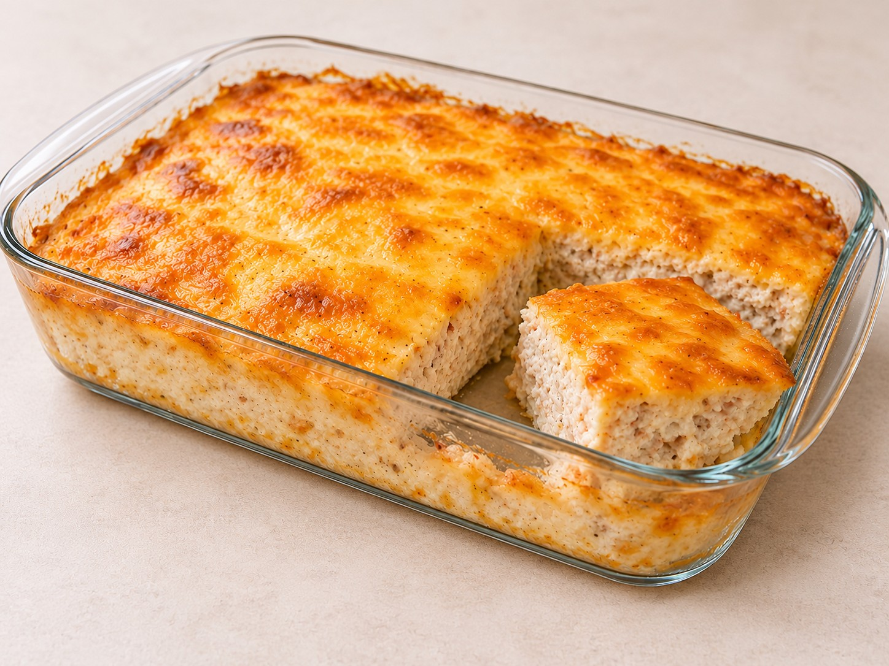

Основные блюда · 40–45 минут
Куриная запеканка с творогом и сыром
Нежная белковая запеканка из куриного фарша с мягким творогом и золотистой сырной корочкой. Готовится в стеклянной форме в аэрогриле без лука, кабачка и лишнего масла. КБЖУ рассчитано по конкретным продуктам и фактическому выходу блюда — для точного результата указывайте данные с этикеток своих ингредиентов.
К ингредиентам
Ингредиенты · 2 порций
- Основа запеканки
- Фарш из мяса цыплят-бройлеров (130 ккал | Б 20 | Ж 5 | У 1,5) — 450 г
- Творог мягкий «Савушкин» 0,1% (44 ккал | Б 10 | Ж 0,1 | У 1) — 125 г (1 упаковка)
- Яйцо куриное — 1 шт. (~50 г без скорлупы)
- Сыр фасованный GENIfit (232 ккал | Б 31 | Ж 12 | У 0) — 90 г (1/2 пачки)
- Соевый соус — 1 ч. л. (~5 г)
- Специи
- Чеснок — 1 зубчик или 1/2 ч. л. сухого чеснока
- Паприка — 1/2 ч. л.
- Чёрный молотый перец — по вкусу
- Соль — не добавлять: соль уже есть в сыре и соевом соусе
Пищевая ценность
На 100 г: 138 ккал · Б 20.5 г · Ж 5.7 г · У 1.3 г
Шаг за шагом
Замешивание белковой основы
В миске соедините 450 г куриного фарша, 125 г мягкого творога, 1 яйцо и 1 ч. л. соевого соуса. Добавьте чеснок, паприку и чёрный перец. Соль не добавляйте. Тщательно перемешайте массу до однородности.
Добавление сыра и подготовка формы
Натрите 90 г сыра. Около 60 г вмешайте в фарш, а оставшиеся 30 г отложите для верхушки. Переложите массу в жаропрочную стеклянную форму комнатной температуры и разровняйте слоем примерно 3–4 см.
Важно: используйте только стеклянную форму, предназначенную для духовки или аэрогриля.
Запекание под фольгой
Накройте форму фольгой и готовьте в аэрогриле при 180 °C 23 минуты. Фольга должна быть хорошо зафиксирована и не касаться нагревательного элемента.
Золотистая сырная корочка
Снимите фольгу, посыпьте запеканку оставшимися 30 г сыра и готовьте ещё примерно 10–12 минут при 180 °C до золотистой корочки. Если сыр начинает быстро темнеть, снизьте температуру до 170 °C.
Проверьте центр: фарш должен быть полностью светлым, без розовой сырой середины. При наличии термометра доведите температуру в центре до 74 °C.
Отдых и подача
Дайте запеканке постоять 5–10 минут — она станет плотнее, а соки равномерно распределятся. Для точного КБЖУ взвесьте готовое блюдо без контейнера. В этом варианте фактический выход составил около 670 г.